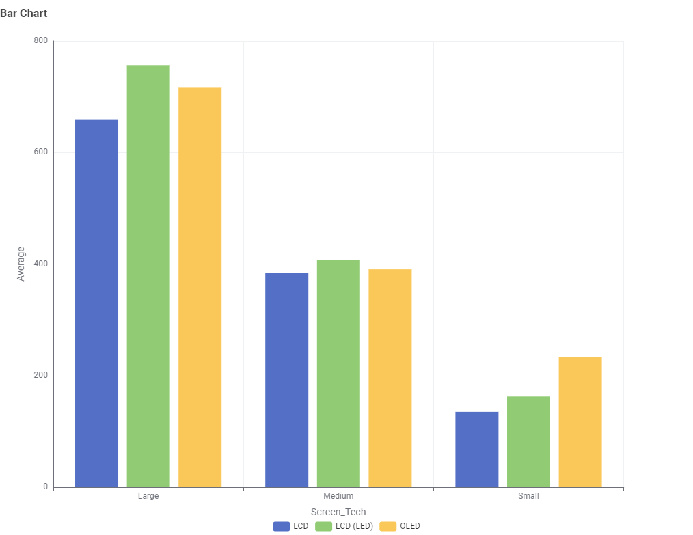
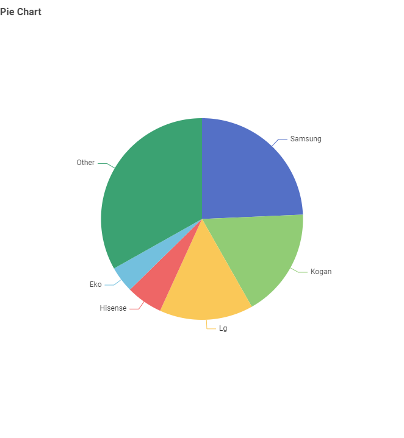
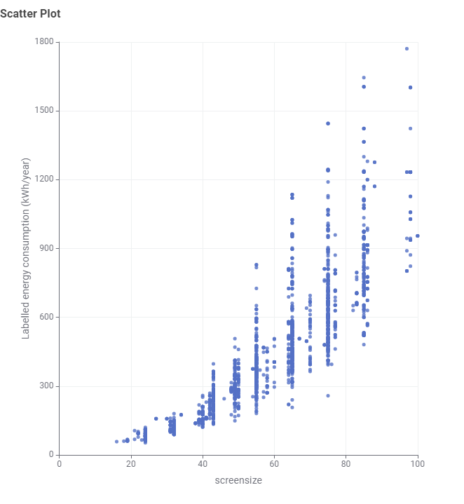

This visualisation is designed for Australian consumers who want to understand how TV energy consumption relates to screen size and technology when making purchasing decisions.

This chart shows the number of TVs for each screen technology. LCD and LCD (LED) TVs are more common than OLED in the dataset.

This chart shows that OLED TVs tend to have larger average screen sizes compared to LCD and LCD (LED).

This chart shows that energy consumption increases significantly with screen size. Larger TVs use more energy regardless of technology.
Although OLED TVs may appear to consume more energy, this is largely because they are typically larger. Screen size is the main factor influencing energy consumption.
Source: Australian TV energy dataset
Processing: Data was cleaned and analysed using KNIME.
Limitations: Results depend on the dataset version and may not reflect all market conditions.
This website structure and explanations were created with AI assistance. All analysis and final decisions were made by the student.